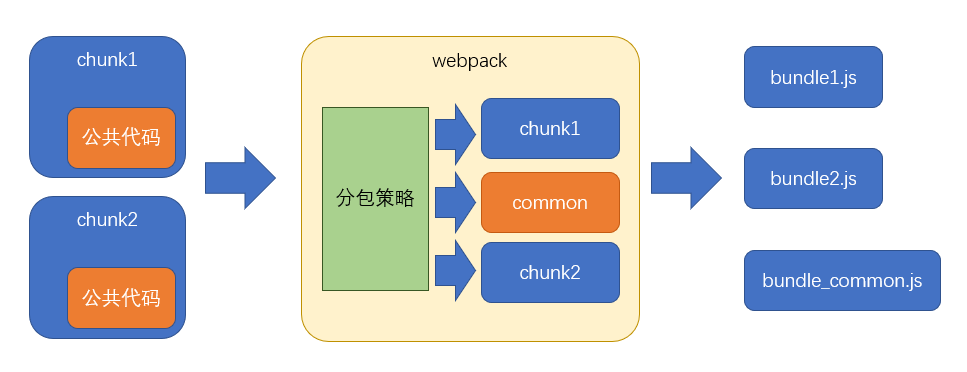

一、基本原理
不同与手动分包，自动分包是从实际的角度出发，从一个更加宏观的角度来控制分包，而一般不对具体哪个包要分出去进行控制
因此使用自动分包，不仅非常方便，而且更加贴合实际的开发需要
要控制自动分包，关键是要配置一个合理的分包策略
有了分包策略之后，不需要额外安装任何插件，webpack会自动的按照策略进行分包
实际上，webpack在内部是使用
SplitChunksPlugin进行分包的
过去有一个库CommonsChunkPlugin也可以实现分包，不过由于该库某些地方并不完善，到了webpack4之后，已被SplitChunksPlugin取代

- 从分包流程中至少可以看出以下几点
- 分包策略至关重要，它决定了如何分包
- 分包时，webpack开启了一个新的chunk，对分离的模块进行打包
- 打包结果中，公共的部分被提取出来形成了一个单独的文件，它是新chunk的产物
二、分包策略的基本配置
- webpack提供了
optimization配置项，用于配置 一些优化信息，其中splitChunks是分包策略的配置
module.exports = { |
- 事实上，分包策略有其默认的配置，我们只需要轻微的改动，即可应对大部分分包场景，配置如下
2.1 分包策略配置项
2.2.1 chunks
该配置项用于配置需要应用分包策略的chunk
我们知道，分包是从已有的chunk中分离出新的chunk，那么哪些chunk需要分离呢
chunks有三个取值，分别是
- all: 对于所有的chunk都要应用分包策略
- async：【默认】仅针对异步chunk应用分包策略
- initial：仅针对普通chunk应用分包策略
- 所以，你只需要配置
chunks为all即可
2.2.2 maxSize
该配置可以控制包的最大字节数，如果某个包（包括分出来的包）超过了该值，则webpack会尽可能的将其分离成多个包
但是不要忽略的是，分包的基础单位是模块，如果一个完整的模块超过了该体积，它是无法做到再切割的，因此，尽管使用了这个配置，完全有可能某个包还是会超过这个体积
另外，该配置看上去很美妙，实际意义其实不大，因为分包的目的是提取大量的公共代码，从而减少总体积和充分利用浏览器缓存
虽然该配置可以把一些包进行再切分，但是实际的总体积和传输量并没有发生变化
如果要进一步减少公共模块的体积，只能是压缩和
tree shaking
三、分包策略的其他配置
如果不想使用其他配置的默认值，可以手动进行配置：
- automaticNameDelimiter：新chunk名称的分隔符，默认值~
- minChunks：一个模块被多少个chunk使用时，才会进行分包，默认值1
- minSize：当分包达到多少字节后才允许被真正的拆分，默认值30000
四、缓存组
之前配置的分包策略是全局的，而实际上，分包策略是基于缓存组的
每个缓存组提供一套独有的策略，webpack按照缓存组的优先级依次处理每个缓存组，被缓存组处理过的分包不需要再次分包
默认情况下，webpack提供了两个缓存组：
module.exports = { |
- 很多时候，缓存组对于我们来说没什么意义，因为默认的缓存组就已经够用了，但是我们同样可以利用缓存组来完成一些事情，比如对公共样式的抽离
module.exports = { |
五、配合多页应用
- 虽然现在单页应用是主流，但免不了还是会遇到多页应用，由于在多页应用中需要为每个html页面指定需要的chunk，这就造成了问题
new HtmlWebpackPlugin({ |
- 我们必须手动的指定被分离出去的chunk名称，这不是一种好办法，幸好
html-webpack-plugin的新版本中解决了这一问题
npm i -D html-webpack-plugin@next |
- 做出以下配置即可：它会自动的找到被
index分离出去的chunk，并完成引用
new HtmlWebpackPlugin({ |
目前这个版本仍处于测试解决，还未正式发布
六、原理
6.1 自动分包的原理其实并不复杂，主要经过以下步骤：
- 检查每个chunk编译的结果
- 根据分包策略，找到那些满足策略的模块
- 根据分包策略，生成新的chunk打包这些模块（代码有所变化）
- 把打包出去的模块从原始包中移除，并修正原始包代码
6.2 在代码层面，有以下变动
- 分包的代码中，加入一个全局变量，类型为数组，其中包含公共模块的代码
- 原始包的代码中，使用数组中的公共代码